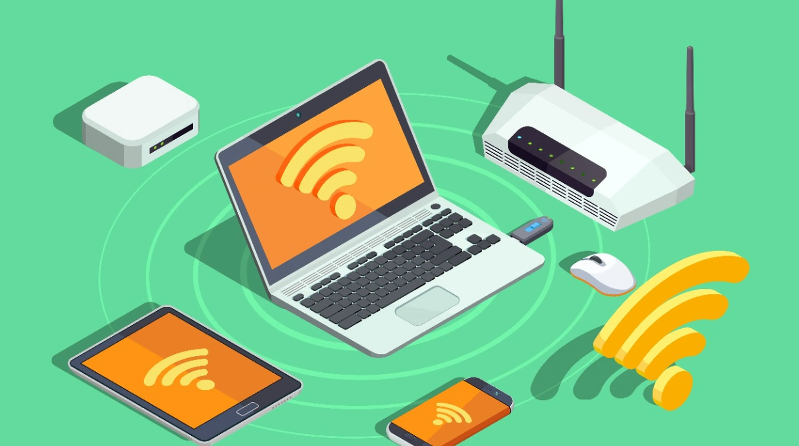

¿Qué es Wi-Fi?
Wi-Fi es una tecnología de comunicación inalámbrica que permite la conexión de dispositivos electrónicos a una red de datos, como internet, sin la necesidad de cables. La palabra "Wi-Fi" es una abreviatura de "Wireless Fidelity".
¿Cómo funciona el WiFi?
Una red WiFi funciona mediante la transmisión de datos a través de señales de radio entre dispositivos y puntos de acceso. Los puntos de acceso son puentes entre dispositivos inalámbricos y una red cableada. Los dispositivos clientes se autentican y se asocian con los puntos de acceso para establecer una conexión. Los datos se transmiten en paquetes a través de señales de radio en bandas de frecuencia específicas. Un enrutador gestiona el tráfico de datos entre la red WiFi y la red cableada. Las redes WiFi se aseguran con medidas de seguridad como cifrado y contraseñas. La configuración y administración de la red se realizan a través del enrutador. Esto proporciona conectividad inalámbrica flexible y ampliamente utilizada en hogares, empresas y lugares públicos.

Ventajas y Desventajas de Wi-Fi
Wi-Fi ofrece varias ventajas, como la movilidad, la flexibilidad de ubicación y la fácil instalación. Sin embargo, también tiene desventajas, como la limitación de alcance y posibles problemas de seguridad.
Seguridad en Wi-Fi
La seguridad es una preocupación importante en las redes Wi-Fi. Para proteger tu red y datos, es crucial configurar contraseñas sólidas y utilizar protocolos de seguridad como WPA3. También debes evitar el uso de redes abiertas en lugares públicos.